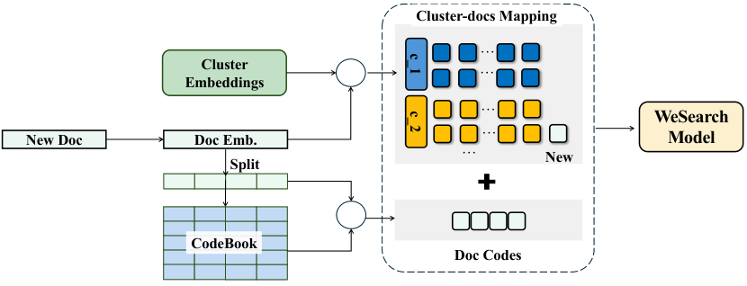
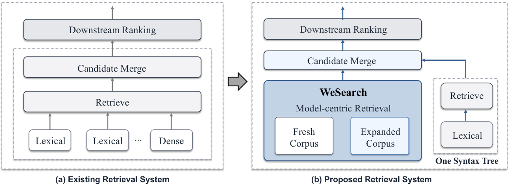

Contents · 9 sections
1A concrete case: which path does a multi-topic article take2The pipeline: pick baskets, then rank documents3Clusters and compression are model parameters4Training: three losses and samples from several sources5How new articles enter the index6Online results7Limitations as I see them8If you want to try it9VerdictSHARE
WeSearch at WeChat Search replaces the old set of parallel retrieval paths with one model: it first finds the document clusters relevant to the query, then scores individual documents inside those clusters, separating coarse pruning from fine relevance judgment. Unlike generative retrieval, it does not give each document one fixed hierarchical Semantic ID; that approach assumes a document follows a single semantic path, while many articles cover several topics at once. The index updates incrementally, so the model moves from monthly updates to weekly refreshes, or daily when needed. It is now the main retrieval path of WeChat Search, and a month-long full-traffic A/B test showed CTR up 0.68% and retrieval resource cost down 41%. Take more clusters to protect recall, and leave relevance to per-document scoring.
This paper deserves a close read because it is a rare case of folding many retrieval paths into one model for billion-scale content search while cutting cost. The idea itself is not new: cluster first and search inside clusters, compress document vectors with product quantization, and add a small ranking network at the end. What is new is training all of these pieces as model parameters together, and adding incremental mounting plus periodic full refreshes so the system can run online for a long time.
A concrete case: which path does a multi-topic article take
Start with the Semantic ID problem (illustrative). Suppose an article spends its first half on which Beijing museums to visit with kids on a weekend, and its second half on how to grab tickets in a mini program. A hierarchical Semantic ID must give it one code string, say with the first digit set to "family outings" and later digits refining it. When a user searches "how to book museum tickets", if decoding takes the "ticketing and tools" branch at the first step, this article can never be decoded.
| Illustrative | Content | Hierarchical Semantic ID | WeSearch |
|---|---|---|---|
| Article A | Museums with kids + ticket tips | Hangs on one path only | Sits in some cluster, and the cluster only brings it into the candidates |
| Query "how to book museum tickets" | Leans toward ticketing | A wrong first digit loses the whole article | Takes about ten thousand clusters at once, A's cluster is very likely included, then each document is scored |
The key idea in WeSearch is that a cluster is not a document's identity, only a basket that holds candidates. Each document sits in exactly one basket, and if that basket is not chosen, the document cannot become a candidate. WeSearch's answer is to take ten thousand baskets at once, so the basket holding a relevant document is very likely chosen. It also does not decode codes one position at a time the way Semantic IDs do, so an early wrong step cannot derail the rest of the path. A basket can be coarse and mixed, as long as relevant documents are very likely inside the chosen baskets. Deciding which document is more relevant is left to the later step that scores documents one by one.
The pipeline: pick baskets, then rank documents

An online request goes through three steps. First, the query encoder turns the query into a vector and compares it with every cluster center. The nearest N clusters are kept, and their documents are pooled as candidates. Second, it uses compressed document vectors to compute distances quickly and keeps the top P documents. Document vectors are stored in memory compressed with OPQ: they are multiplied by a rotation matrix, then cut into segments stored as numbers (details in the next section). The query vector is multiplied by the same rotation matrix so the two sides can be compared.
Third, during compression each document vector was cut into m segments, and each segment stored only the number of the closest small vector (codebook entry) in a codebook. Now those m small vectors are looked up by number and joined back into an approximate vector. This vector lives in the same rotated space as the rotated query vector, so no rotation back is needed.
A small feed-forward network concatenates the rotated query vector, this reconstructed document vector and the document features, scores them, and outputs the final top K. Both training and serving use this reconstructed vector. Document features cover quality, behavior statistics such as clicks, and freshness. Each raw feature is bucketed and looked up in its own embedding table; these tables are model parameters trained with the model, and their concatenation is the document feature embedding.
Why three steps instead of two? The candidate set is very large, and running the feature-aware network on each is too slow. Vector distance alone cannot tell apart quality, freshness and user feedback. So the cheapest distance does the coarse filtering, and a more expensive network ranks a small set of candidates.
The paper sweeps N on the Base corpus of hundreds of millions of documents. As the number of clusters grows, candidate coverage first rises, then barely moves past about ten thousand, while inference cost keeps rising, so N is set to ten thousand.
Clusters and compression are model parameters
Clusters come from offline two-level residual clustering (RQ-KMeans). The first level splits document vectors into coarse groups. The second level clusters what remains after subtracting each document's coarse center. A cluster's center is the sum of its two level centers. This gives a finer split than single-level k-means at about the same training cost.
All document vectors must fit in memory, and a billion raw vectors do not. WeSearch compresses them with OPQ, so each document stores only m codebook entry numbers.
First, the offline index build. The query encoder is initialized from a pretrained two-tower model, and vectors for the whole corpus are computed with this initialized encoder. Clusters, the rotation matrix, the codebooks and each document's m codes are all computed offline from these vectors and stored in the checkpoint together with the model parameters.
Next, training. The paper treats both the rotation matrix and the codebooks as model parameters trained with the retrieval objective, so compression error is optimized for retrieval quality instead of being a separate step done afterward. The paper treats document codes as something stored at index build and recomputed only at release, so my reading is: codes stay fixed during training, the document side is rebuilt by looking up the stored codes in the codebooks, and what gets trained are the codebook vectors; the rotation matrix acts on the query vector. Hoot says

- Illustrative: the document stores codes (#2, #1), meaning "segment 1 reads entry #2, segment 2 reads entry #1"; the document stores no vector itself.
- Before training it decodes to (0.4, 0.1 | 0.3, 0.5). Squared distance to the rotated query (0.5, 0 | 0.3, 0.4), segment by segment: segment 1 is 0.01+0.01, segment 2 is 0+0.01, total 0.03.
- One training step moves segment 1's entry #2 from (0.4, 0.1) to (0.5, 0.1). The codes are still (#2, #1), yet the decoded vector becomes (0.5, 0.1 | 0.3, 0.5) and the squared distance becomes 0+0.01+0+0.01 = 0.02.
- Interpretation: codes being fixed during training is inferred from the paper saying codes are regenerated with that version's parameters only at release. When a new version goes live, the model, clusters, codebooks and codes are validated and switched together.
Illustrative: the document is cut into only 2 segments (the paper uses m), each codebook shows only 3 entries, and all vectors and values are made up. "Codes fixed during training" is an interpretation drawn from the paper's statement that codes are generated with that version's parameters at release. Source: paper §3.2.2 (rotation matrix and codebooks are model parameters; the document vector is rebuilt by looking up codebook entries by code) and the release-process section (no rebuild after every training update; codes generated with that version's parameters at release); all numbers are illustrative.
Finally, release. When a new model version goes live, each document's cluster assignment is recomputed from that version's document vectors and cluster centers, and its codes are recomputed with that version's rotation matrix and codebooks. The model, clusters, codebooks and codes are validated and switched together as one version. Between releases, new documents get their vectors from the encoder of the version currently online and are mounted with that version's fixed clusters and codebooks.
| Clusters | Document representation | Recall@300 |
|---|---|---|
| 2k×1k | OPQ (32 segments, codebook 256) | 46.66% |
| 2k×1k | OPQ (32 segments, codebook 512) | 47.10% |
| 2k×1k | OPQ (64 segments, codebook 256) | 51.54% |
| 10k×200 | OPQ (64 segments, codebook 256) | 51.34% |
| 2k×1k | Plain 32-dimensional vector | 33.07% |
The table shows two things. How the clusters are split (2k×1k or 10k×200) barely matters, while the capacity of the document representation matters a lot. Storing a plain 32-dimensional vector gives 33.07% Recall@300, about 18 points below OPQ (64 segments, codebook 256). The paper's explanation is that direct dimensionality reduction loses fine-grained information, while segment-wise quantization keeps more representation capacity.
How is coarse distance computed quickly? For each query, the system first computes the distance between each of its segments and every entry in that segment's codebook, and stores the results in a lookup table. A document's distance is then the sum of the table entries picked by its m entry numbers, using only lookups and additions, no vector multiplication. The table is built once per query and shared by all candidates.
Training: three losses and samples from several sources
Training teaches two things at once. The first is picking the right clusters: a cluster-level cross-entropy pulls the query vector toward the center of the cluster holding the positive document. The second is picking the right document among candidates: a listwise cross-entropy over the top P candidates, where the positive document is forced into the candidates during training, plus a pairwise margin loss that puts strongly relevant documents above weakly relevant ones.
Positives come from three sources: high relevance grades from human annotators or teacher models, high satisfaction in search sessions, and long dwell or effective clicks. Negatives are mostly documents for the same query that are close but not good enough, such as those with lower relevance grades, those shown but not effectively clicked, and those ranked high by a retrieval system but judged irrelevant. The paper stresses that a missing click is not taken as a negative by itself; exposure and position are considered too.
The model is trained on a rolling basis. Each round mixes newly collected queries, documents, labels and feedback with a pool of high-quality historical samples, and continues training from the previous checkpoint. New data keeps the model current on new topics, and old data keeps it from forgetting long-tail knowledge.
How new articles enter the index

This shows another benefit of dropping Semantic IDs. A newly published article needs no change to any model parameter. The system computes its vector with the encoder of the version currently online, assigns it to the nearest cluster, quantizes it with the existing codebooks, and hangs its number under that cluster. This runs continuously in the background, so new content becomes searchable quickly. The paper's reason is that clusters only narrow the candidate space and are not a document's full hierarchical identifier, so mounting a new document does not disturb other documents.
Online results

In production, WeSearch replaced the old parallel lexical and dense retrieval paths, keeping only one syntax tree for exact term matching. Results from both paths are merged and deduplicated before the downstream ranker.
On the billion-scale corpus, the paper has a satisfaction teacher model grade each result returned for a query and counts the share graded as high quality. The previous online system scores 0.1732, WeSearch alone 0.1871, and WeSearch with the syntax tree 0.2088. These results support keeping one syntax tree to add exact term matching.
In blind human evaluation, annotators compared the result lists of WeSearch and the old system side by side; under all three corpus sizes, human judgments favored WeSearch, in the same direction as the online A/B tests.
One-week A/B tests raised CTR under all three corpus sizes, by 0.27% to 0.61%, and CTR on long-query traffic rose by 1.10%. Long queries depend more on semantic understanding, so this fits.
In the month-long full-traffic A/B test, CTR rose 0.68%, time on the results page rose 0.71%, and article clicks per user rose 2.27%, which means the gains held over a month rather than fading after a week. At the same time, retrieval resource cost fell 41% and image-text retrieval latency dropped by 19 ms. I think the cost drop comes mainly from merging many retrieval paths into one model; the latency also benefits from the inference speedups and removed serialization described in Section 5 of the paper.
Limitations as I see them
- The comparison with Semantic IDs is a single figure. On the Base corpus the Semantic ID method trails the online baseline at every cutoff, but this comparison is not repeated at billion scale, so it is hard to tell whether the method is weak or just not tuned.
- The online A/B gains cannot be split among structure, features and sample mining. In the offline billion-scale ablation, semantic vectors alone beat the online system on Recall@100 for the two relevance subsets, but fall below it on the long-dwell subset (0.4323 against 0.4407). The gain on behavior metrics comes mainly from document features and sample mining, which could be added to other retrieval designs too; and adding sample mining slightly lowers one relevance subset (0.3865 to 0.3794).
If you want to try it
- Check how many multi-topic documents your corpus has. If most documents have a single topic, the Semantic ID problem is minor.
- Run two-level residual clustering on your existing two-tower document vectors, and sweep how many clusters per query it takes for recall to saturate, to size the baskets.
- Compress document vectors with OPQ and compare recall against plain dimensionality reduction, to make sure compression does not eat too much quality.
- Add a small feed-forward network with document features on top of the candidates, train it with listwise plus pairwise losses, and include lower-grade and shown-but-not-clicked negatives from the same query.
- Once offline recall holds up, replace one dense retrieval path in an A/B test, keep the exact-match path, and then see whether other paths can be merged step by step.
Verdict
| Aspect | Assessment |
|---|---|
| Problem importance | High: retrieval cost and quality are core issues for billion-scale content search |
| Method novelty | Medium: each piece is mature; the contribution is combining them into one trainable, incrementally updated model |
| Evidence | Medium-high: a month-long full-traffic A/B test and cost data, but the Semantic ID comparison is thin |
| Engineering cost | Medium-high: needs distributed training, quantization and online lookup optimization |
| Worth trying | Yes, especially for content search with costly multi-path retrieval and many multi-topic documents |
How did this read for you?
Hoot made a note. Thanks for the feedback.
One tap, no sign-in; tap again to undo. Only anonymous counts are kept, never who you are.
Discussion
Add experiment details, reproduction notes or a different take. Requires a GitHub sign-in.
Loading the discussion…